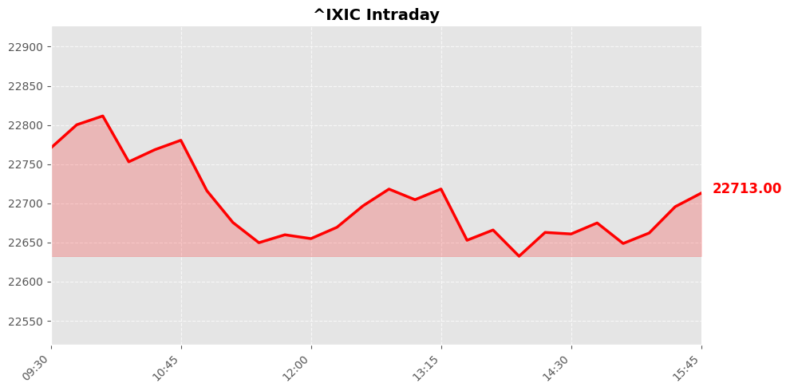
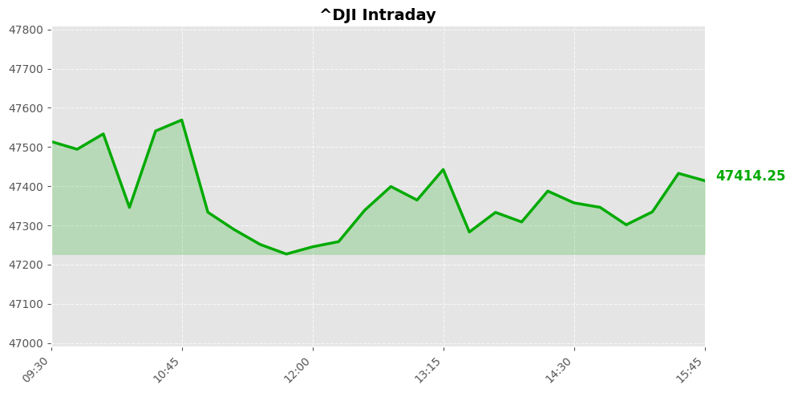
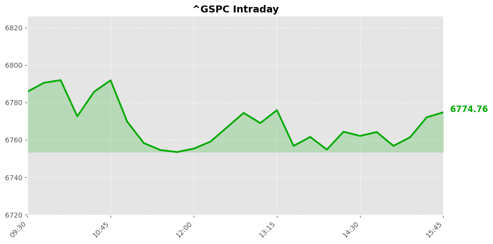

Daily Market Briefing
Market Overview



Market Analysis
The recent market activity reflects a cautious yet resilient sentiment among investors, with mixed movements across major indices. The NASDAQ Composite experienced a modest gain of approximately 0.08%, closing at 22,716.13. This slight uptick suggests continued investor confidence in the technology and growth sectors, which have historically driven NASDAQ's performance. The stability here indicates that, despite some volatility, investors remain optimistic about innovation-driven companies and the broader tech ecosystem.
In contrast, the Dow Jones Industrial Average declined by roughly 0.61%, losing 289.24 points to close at 47,417.27. This sharper downturn hints at underlying concerns, possibly related to macroeconomic uncertainties, inflationary pressures, or geopolitical developments impacting industrial and cyclical sectors. The Dow's sensitivity to such factors often reflects broader economic apprehensions, which could be influencing investor risk appetite.
The S&P 500, a broad market barometer, experienced a negligible decline of 0.08%, ending at 6,775.8. Its relatively stable performance suggests that, while some sectors face headwinds, the overall market remains resilient. The small decrease might reflect profit-taking or short-term adjustments amid prevailing macroeconomic concerns.
Overall, the market exhibits a nuanced picture: technology-driven sectors maintain stability, hinting at underlying confidence, whereas traditional industrial sectors face headwinds, reflecting cautious sentiment. Investors are likely balancing optimism about innovation and growth with caution due to macroeconomic uncertainties. Going forward, monitoring economic data releases, corporate earnings, and geopolitical developments will be crucial in assessing whether this mixed trend persists or shifts towards broader risk-off or risk-on sentiment.
Today's Headlines
News Analysis
Certainly. Here's a comprehensive analysis based on today's financial news, structured into key market focus points, potential impact factors, and emerging industry trends:
Main Market Focus Points
-
Corporate Restructuring and Innovation Investment
Atlassian’s decision to cut 10% of its workforce, approximately 1,600 jobs, reflects a strategic pivot towards prioritizing investments in artificial intelligence (AI) and enterprise sales. This move indicates a broader corporate trend of optimizing operational efficiency while reallocating resources to high-growth technological domains, especially AI, which remains a significant driver of future enterprise value. -
Consumer Goods Resilience Amid Market Uncertainty
Nike’s recent upgrade from Wall Street, driven by CEO Elliott Hill’s turnaround efforts, underscores the resilience of certain consumer brands. Despite macroeconomic headwinds, innovative management and strategic repositioning are bolstering investor confidence in consumer staples and apparel sectors, suggesting these industries may serve as defensive plays in volatile markets. -
Geopolitical Tensions and Their Economic Ramifications
Heightened tensions in the Strait of Hormuz, with Iran reportedly laying mines, are raising concerns over oil supply disruptions. The potential for a shutdown in this critical shipping route poses a significant risk to global oil markets and related commodities, impacting inflation, energy prices, and broader economic stability. -
Commodity Supply Chain Disruptions and Inflation Risks
The Iran conflict is disrupting fertilizer shipments, which could lead to increased food prices globally. As fertilizer is essential for agricultural productivity, supply chain disruptions threaten to accelerate food inflation, adding pressure to already strained consumer budgets and potentially influencing central bank policies. -
Regional Responses to Geopolitical Risks
Canada’s efforts to boost oil production as a countermeasure to Iranian supply disruptions, along with Gulf sovereign wealth funds reviewing investments to mitigate Iran-related risks, highlight regional strategies to stabilize energy markets. These moves could influence global oil prices and geopolitical economic alignments.
Potential Market Impact Factors
-
Energy Markets Volatility:
The threat of a Strait of Hormuz closure and Iran’s mining activities could cause sharp swings in crude oil prices, impacting energy stocks and inflation expectations globally. -
Defense and Security Stocks:
Increased geopolitical tensions may benefit defense contractors and security-related industries, as governments bolster military preparedness. -
Consumer and Industrial Sectors:
Disruptions in supply chains for fertilizers and raw materials could lead to cost inflation, squeezing margins for agricultural and manufacturing companies. -
Investor Sentiment and Risk Appetite:
The geopolitical backdrop, combined with corporate restructuring efforts like Atlassian’s layoffs, influences risk sentiment, potentially leading to increased market volatility and sector rotation.
Industry Trends to Note
-
AI and Digital Transformation:
The emphasis on AI investments by companies like Atlassian indicates ongoing digital transformation trends. Firms that effectively leverage AI are positioned for competitive advantages, prompting investor interest in tech and enterprise software sectors. -
Consumer Brand Turnarounds:
Successful management strategies, exemplified by Nike’s optimistic outlook, reflect a trend where consumer brands adapt to evolving market conditions through innovation and branding efforts. -
Energy Transition and Supply Security:
Countries seeking to increase domestic oil production amid geopolitical risks signal a focus on energy security, influencing long-term investments in traditional energy sectors while balancing the global shift towards renewables. -
Geopolitical Risk and Commodity Markets:
The Iran conflict underscores the importance of geopolitical stability in commodity pricing, with potential ripple effects across food, energy, and industrial raw materials markets.
In summary, today’s market landscape is heavily influenced by geopolitical tensions, corporate strategic shifts, and sector-specific resilience strategies. Investors should remain vigilant to macroeconomic signals emanating from energy markets and geopolitical developments, while also recognizing opportunities in innovation-driven industries and defensive consumer sectors.
Economic Indicators
Inflation Indicators
Employment Indicators
Consumer Indicators
Community Hot Stocks
| Rank | Symbol | Mentions | Source |
|---|---|---|---|
| 1 | HIT | 76 | |
| 2 | PUMP | 41 | |
| 3 | NVDA | 39 | |
| 4 | BULL | 37 | |
| 5 | USA | 35 | |
| 6 | FACT | 35 | |
| 7 | MAX | 32 | |
| 8 | NBIS | 31 | |
| 9 | SHIP | 30 | |
| 10 | PATH | 25 | |
| 11 | TACO | 25 | |
| 12 | LUCK | 25 | |
| 13 | VS | 25 | |
| 14 | TURN | 24 | |
| 15 | SHOT | 24 | |
| 16 | WTF | 24 | |
| 17 | FAST | 24 | |
| 18 | NET | 24 | |
| 19 | MIND | 23 | |
| 20 | CARE | 23 |
Market Outlook
In the near term, the market exhibits mixed signals, with the NASDAQ edging higher while the Dow and S&P 500 retreat slightly. The NASDAQ’s modest gain (+0.08%) suggests continued investor interest in technology and innovation sectors, possibly driven by optimism around AI investments, as exemplified by Atlassian’s strategic workforce reduction to fund AI and enterprise initiatives. However, the broader indices’ slight declines (-0.61% for Dow and -0.08% for S&P 500) reflect caution amid geopolitical and macroeconomic uncertainties.
Major geopolitical tensions, notably Iran-related conflicts impacting global supply chains—particularly fertilizers and oil—pose tangible risks. Rising food prices and potential energy supply disruptions could exert upward pressure on inflation, possibly prompting defensive investor behavior in the coming days. Conversely, resilient corporate earnings in sectors like sportswear, as highlighted by Nike’s positive outlook from Wall Street, suggest some underlying strength in consumer discretionary.
Investors should remain vigilant about potential volatility driven by geopolitical developments and commodity price swings. The market’s sensitivity to news about Iran’s conflict and its ripple effects on energy and food supply chains is a key risk factor. Additionally, geopolitical statements, such as Trump’s comments on Iran, may influence sentiment and market direction.
Key points to focus on include analyzing sector rotation—particularly whether defensive sectors gain traction—and monitoring commodity prices for signs of sustained inflationary pressures. While the market’s near-term bias appears cautious with a slight downward tilt, selective opportunities may emerge in technology and consumer sectors resilient to geopolitical shocks.
Overall, expect a cautiously optimistic tone with heightened vigilance for volatility stemming from geopolitical tensions and macroeconomic data releases.
Follow Us

Scan to follow StockGate
For more US stock market insights